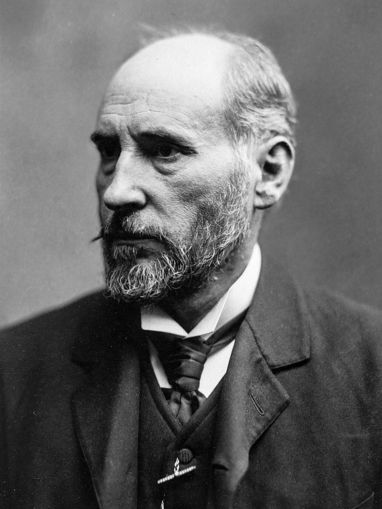

Ramón y Cajal recibe en Estocolmo el premio Nobel de Medicina
El sabio aragonés don Santiago Ramón y Cajal ha recibido hoy, de manos del rey de Suecia, el premio Nobel de Medicina, compartido con el italiano Camilo Golgi. Se premia su demostración de que el sistema nervioso está hecho de células individuales.

En la sala de la Academia de Música de Estocolmo, adornada de flores y presidida por la familia real de Suecia, se han entregado esta tarde los premios que instituyó el testamento de Alfredo Nobel. Cuando llegó el turno del premio de Medicina, avanzó hacia el estrado un español de barba recia y aire poco dado a ceremonias: don Santiago Ramón y Cajal, catedrático de la Universidad de Madrid, que recibió de manos del rey Óscar II la medalla y el diploma entre los aplausos de la concurrencia. Comparte el galardón el profesor italiano Camilo Golgi, de la Universidad de Pavía, presente también en la fiesta.
El premio corona una obra de veinte años hecha con más paciencia que medios. Cajal ha demostrado, preparación a preparación, que el sistema nervioso no es una red continua, como se venía enseñando, sino un tejido de células individuales, las llamadas neuronas, que se tocan sin fundirse y se comunican por contacto, como manos que se estrechan sin soldarse. Para verlo se valió, mejorándolo, del método de tinción que el propio Golgi había inventado: esa reacción del cromato de plata que ennegrece unas pocas células entre miles y las recorta enteras, con todas sus ramas, sobre el fondo claro de la lámina.
La vida del premiado parece escrita para ejemplo de escolares. Hijo de un médico rural aragonés, fue de niño díscolo y amigo de dibujar en las tapias, y su padre, para domarlo, lo puso de aprendiz con un barbero y luego con un zapatero. De aquellas manos salió un mozo que quiso ser pintor y acabó siendo médico, que sirvió en la guerra de Cuba, de donde volvió enfermo, y que fue fotógrafo notable antes de encerrarse con su microscopio. En las universidades de Valencia, Barcelona y Madrid ha levantado su obra, dibujando él mismo sus células como quien dibuja paisajes.
No falta en la fiesta una ironía que los entendidos saborean en silencio: los dos premiados sostienen doctrinas contrarias. Golgi defiende todavía que el sistema nervioso es una red continua, y Cajal ha edificado su gloria demostrando lo contrario con el método del propio Golgi. La Academia sueca ha querido premiar juntos al inventor del instrumento y al que mejor supo mirar a través de él, y ambos sabios se han saludado con la cortesía que la ocasión manda. La ciencia tiene estas escenas: dos hombres que no se dan la razón compartiendo el mismo laurel, mientras las células, calladas, guardan la respuesta.
Para España, la jornada tiene un sabor particular. No abundan los días en que la ciencia española sea llamada a un estrado europeo, y este ha llegado por el trabajo de un hombre que investigó años con aparatos comprados de su bolsillo y láminas dibujadas a mano en la mesa de su casa. El propio Cajal repite a quien quiera oírle que no hay cuestiones agotadas, sino hombres agotados en las cuestiones. Ojalá el laurel de Estocolmo sirva de espuela: que los gobiernos entiendan que los microscopios son también artillería de las naciones, y que talento en España sobra; lo que ha faltado es quien lo sostenga.